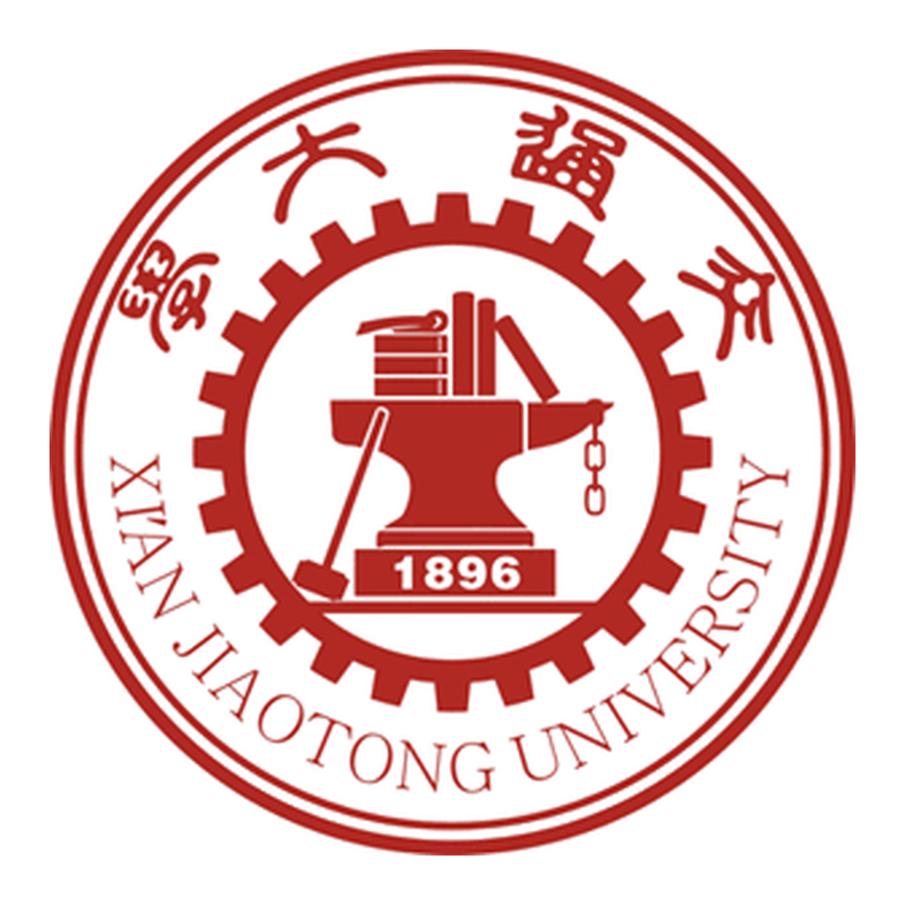
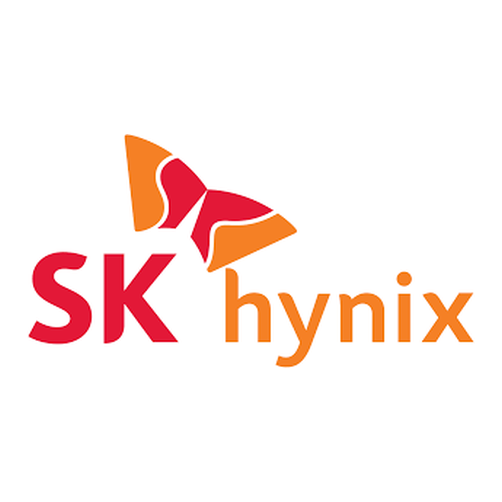
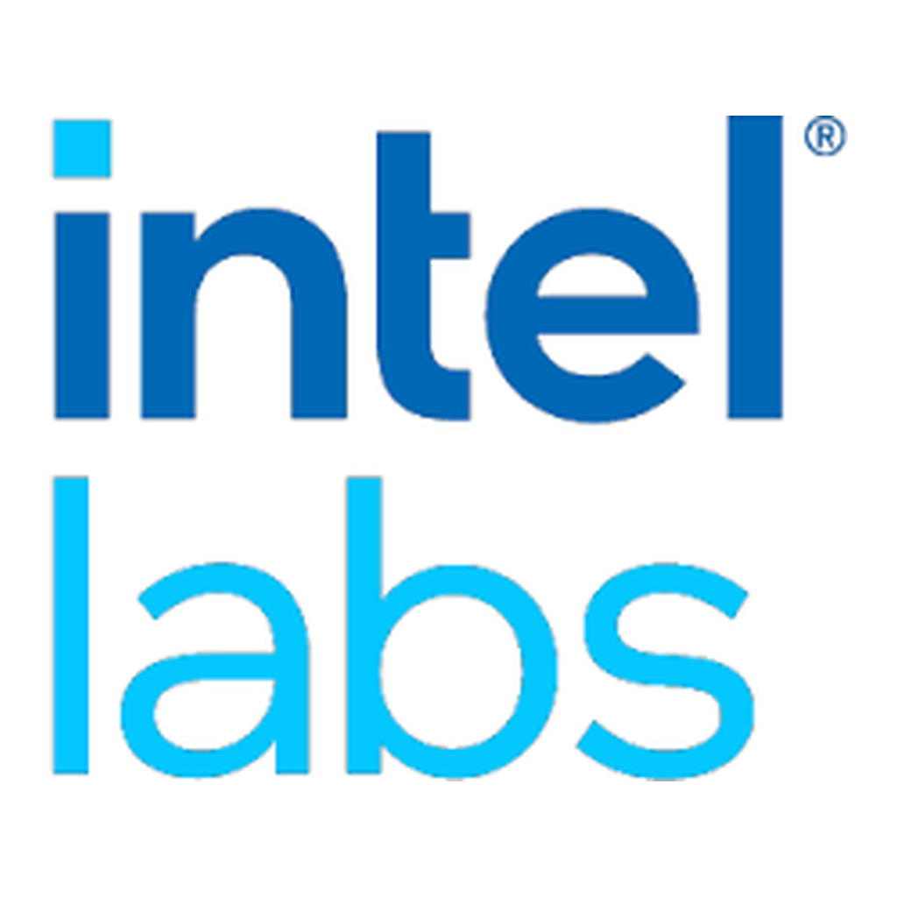

Biography
I am currently working at SK hynix Dalian Memory Technology & Manufacturing (DMTM) as a Process Integration and Yield Engineer. Before that, I received my M.S. in Electrical Engineering from Korea University in February 2026, and my B.Eng. in Information Engineering from Xi'an Jiaotong University in August 2023. My research interests focus on AI/ML for wireless communication systems, multimodal sensing and integrated sensing and communications. I warmly welcome undergraduate, master's, and Ph.D. students with overlapping research interests to connect and collaborate on exciting research projects.
Education
Korea University
M.S. in Electrical Engineering
- Advisor: Prof. Chung G. Kang (IEEE Senior Member)
- Research Direction: AI/ML-Enabled Wireless Communications, OTFS, Satellite Communications
- Main Courses: Information Theory, Satellite Communications, Detection and Estimation
- Thesis: Multimodal Sensing-aided Millimeter-wave Beam Prediction with Large Language Models [link]

Xi'an Jiaotong University
B.Eng. in Information Engineering
- Advisor: Prof. Chen Tian
- Main Courses: Signal and Systems, Wireless Communication, Information Theory, Machine Learning
- Thesis: Analysis and Research on Regularized Transceiver in Interference Alignment Networks with Imperfect Channel State Information
Work/Research Experience

SK hynix
Process Integration and Yield Engineer

Intel Labs
Network and Edge Group (NEX) / Wireless AI Software Engineering Intern
- Topics: AI/ML for positioning, traffic prediction, load balancing, and power saving.
- Contribution: Developed AI/ML modules for wireless applications; contributed to 5G-Advanced and pre-6G technology development.
Ericsson
Radio System Technology (RST) / Radio System Developer Intern
- Topics: Uplink coverage enhancement.
- Contribution: Performed system-level simulations via MATLAB to support 3GPP RAN4 validation. Analyzed system performance, composed technical reports, and upgraded the simulation framework for next-generation product pre-research.
Great Bay University
AISC LAB / Visiting Student
- Advisor: Prof. Jiguang He
- Topics: ISAC, LLM, and vision-empowered beam prediction.
- Contribution: Joint publication accepted, currently being extended into a journal paper.
Service & Awards
- Natural Science and Engineering Scholarship, Korea University, 2024-2025
- Brain Korea 21 Scholarship, Korea University, 2024-2025
- "Mobile Communication Engineering," Korea University, Spring 2024
- IEEE Transactions on Mobile Computing (TMC) [Certificate]
- IEEE Transactions on Vehicular Technology (TVT)
- IEEE Wireless Communications Letters (WCL)
- IEEE Vehicular Technology Conference (VTC)
- IEEE Global Communications Conference (GLOBECOM)
People I Respect and Learn From
Unless otherwise noted, this section does not imply collaboration, personal connection, or endorsement. I deeply respect and appreciate everyone who has helped me along the way. The people listed here are those whose public work, teaching, or career paths I have learned from in a more visible way.
Scholars
- Po-Ning Chen (陈伯宁), Professor, Department of Electrical Engineering, National Yang Ming Chiao Tung University. I respect him for his depth in information theory and his substantial record in IEEE Transactions on Information Theory, which speaks strongly to his research level. Beyond research, I think his teaching is first-rate. In my personal view, his OCW courses are among the strongest Chinese-language communication courses, including undergraduate courses such as Introduction to Communication Systems and Introduction to Digital Communications, and graduate courses such as Stochastic Processes, Information Theory, Digital Communications, and Advanced Probability for Communications.
- Lin-Shan Lee (李琳山), Professor, Department of Electrical Engineering, National Taiwan University. I first learned about him through his Signals and Systems course, whose lectures are exceptionally clear. Later, after reading more about his website and career, I came to respect his long-term academic path and broader contributions. He is someone I hope to learn from as a role model.
Athletes
- Lionel Messi. I know that famous debate. Still, based on at least twelve years of watching football, beginning with the 2014 FIFA World Cup match between Argentina and Iran, when he scored that late winner from outside the box, and based on my limited experience playing football myself, I consider Messi the best player of this era, and perhaps the greatest of all time. His technique needs no extra praise. In ordinary debates, people compare his goals with the very best forwards, his dribbles with the very best dribblers, and his assists with the very best midfielders. In other words, he has become a standard himself. His early international career was not smooth, especially with the missed World Cup and Copa America titles, but he did not give up and eventually completed football's major honors. His humility is also something I hope to learn from.
- Paul Pogba. I have heard of Zinedine Zidane, but Pogba is my Zidane. He is the most talented midfielder I have personally watched. If you watched the 2018 FIFA World Cup and UEFA Euro 2020, held in 2021, you saw him near his best: his midfield dribbling, long passing, and ability to control tempo are exactly what the current French team often lacks. As I write this on July 15, 2026, France has just been eliminated by Spain in the World Cup semifinal after being overwhelmed in midfield. It is a pity that his career did not fully meet expectations because of many subjective and objective reasons. Even so, I am grateful for the beautiful football he gave us. I hope the rest of his career goes smoothly.